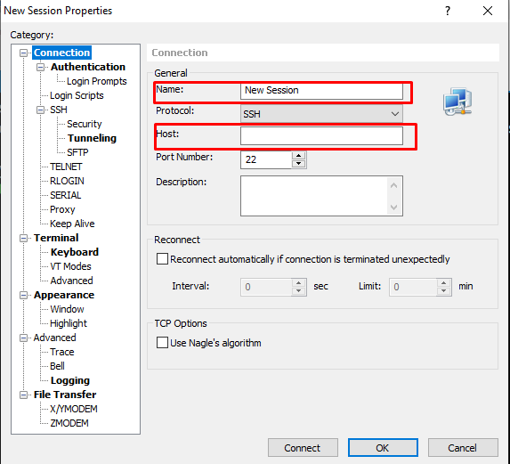

Xshell , Xftp התקנת
.ע"מ שנוכל לעבוד בקלות נצטרך להוריד 2 תכניות שימושיות מאוד (חינם לסטודנטים) ssh , ftp במסגרת הקורס אנו נצטרך לעבוד עם פרוטוקול
קישור להורדת שני התוכנות יישלח למייל שהזנתם, עקבו אחר ההתקנה והתקינו את שני התוכנות.
ע"מ ליצור חיבור ssh חדש:
- לחצו על כפתור ה + בצד ימין
- תנו שם לחיבור
- הזינו את כתובת הIP אליה אתם רוצים להתחבר (יכול להיות מספרים או URL)
- עברו ללשונית Authentication מצד ימין
- הזינו שם משתמש וסיסמא רלוונטיים
- לחצו connect
